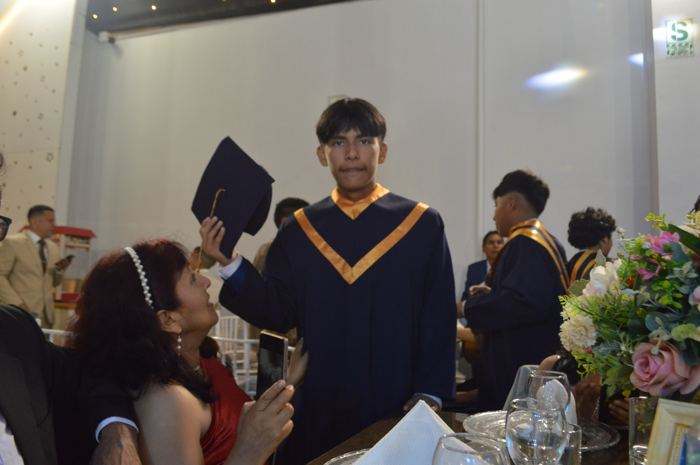

Graduaciones
Cobertura completa del evento: ceremonia, sesión de fotos y fiesta de promoción.
Fotografía de eventos & retratos
Cobertura fotográfica de graduaciones, fiestas y celebraciones — capturando la energía real de cada instante.
Ver portafolioDiez fotografías, un mismo relato: la promoción Graduación 2025. Desde el retrato protocolar hasta el instante espontáneo en la pista de baile — así es como trabajo, buscando la emoción antes que la pose.

Soy fotógrafo de eventos especializado en graduaciones, quinceañeros y celebraciones familiares. Mi enfoque combina el retrato dirigido con la fotografía documental: estoy ahí para las poses perfectas, pero también para las risas que nadie planeó.
Cada entrega incluye edición cuidada, selección curada de las mejores tomas y entrega digital en alta resolución.
Cobertura completa del evento: ceremonia, sesión de fotos y fiesta de promoción.
Sesiones individuales o familiares, en estudio o locación, con dirección de poses.
Quinceañeros, aniversarios y celebraciones — cobertura discreta de principio a fin.
Escríbeme y conversemos sobre fecha, locación y paquete ideal para tu celebración.
juancpb22@gmail.com